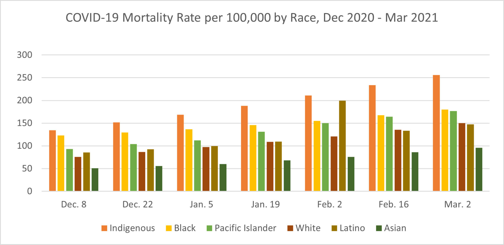

Effects by Race/Ethnicity
The effects of the pandemic also appear to be amplified or reduced depending on race.
Figure 2.3a below shows that the COVID-19 mortality rate per 100,000 people was generally
greater in people of indigenous, black, Pacific Islander, or Hispanic/Latinx descent than white
and Asian Americans from December 2020 to March 2021 (Clary & Liao, 2021).
Figure 2.3a

This isn’t the first disease to have varied impacts depending on race.
In fact, several common diseases such as influenza, diabetes mellitus, and hypertension all seem
to disproportionately affect certain demographics. Many medical professionals believe that these
discrepancies can be attributed to innate vulnerabilities in certain races. It was found that 23
percent of medical students believed and endorsed baseless claims about racial variations in the
human anatomy, including that white people are less susceptible to heart disease than black people,
that white people have larger brains than black people, and that black people have thicker skin
than white people (Hall et al., 2015).
However, if these claims about the link between racial disparities in mortality rates and genetic
vulnerability were true, there’d at least be some sort of variety by disease as to which races are the
most vulnerable, seeing as how it wouldn’t make sense for the same few groups to be constantly targeted
by a plethora of diverse conditions. However, in all cases, there is no variation in which groups are
especially affected, as people of black or indigenous descent always exhibited higher mortality rates
than those of white or Asian descent. Additionally, a similar skewing of the COVID-19 mortality rate can
be seen in Figure 2.3b below, which shows that 67.5 percent of the coronavirus-related deaths between March
and September 2020 were of people from households below the United States’ median income (Health Affairs [HA], 2021).